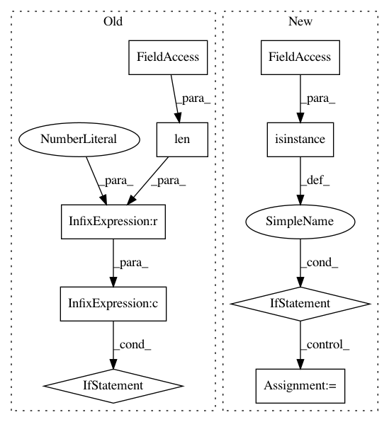

6acc103ea1f132846020209c3eff5646077e55cd,src/plugin.py,EmbeddingRegularizer,__init__,#EmbeddingRegularizer#,10
Before Change
self.dim = emb_dim
if bert is not None:
if not isinstance(bert, (tuple, list)) or len(bert) != 2:
raise ValueError("`bert` should be a tuple/list of config and fine-tuned model "
"such as (\"bert-base-uncased\", \"fine-tuned-model.pth\").")
self.emb_table = BertEmbeddingPredictor(
bert[0], text_encoder, bert[1])
else:
self.emb_table = nn.Embedding.from_pretrained(
After Change
if enable:
if bert is not None:
self.use_bert = True
if not isinstance(bert, str):
raise ValueError("`bert` should be a str specifying bert config such as \"bert-base-uncased\".")
self.emb_table = BertEmbeddingPredictor(bert, tokenizer, src)
vocab_size, emb_dim = self.emb_table.model.bert.embeddings.word_embeddings.weight.shape
vocab_size = vocab_size-3 // cls,sep,mask not used
self.dim = emb_dim
else:
self.use_bert = False
In pattern: SUPERPATTERN
Frequency: 3
Non-data size: 9
Instances
Project Name: Alexander-H-Liu/End-to-end-ASR-Pytorch
Commit Name: 6acc103ea1f132846020209c3eff5646077e55cd
Time: 2019-10-14
Author: alexliu36@gmail.com
File Name: src/plugin.py
Class Name: EmbeddingRegularizer
Method Name: __init__
Project Name: richzhang/colorization-pytorch
Commit Name: 9ba91fa13cbb1e7bc4069e46469b34abb5ca4869
Time: 2018-05-22
Author: tongzhou.wang.1994@gmail.com
File Name: models/base_model.py
Class Name: BaseModel
Method Name: load_networks